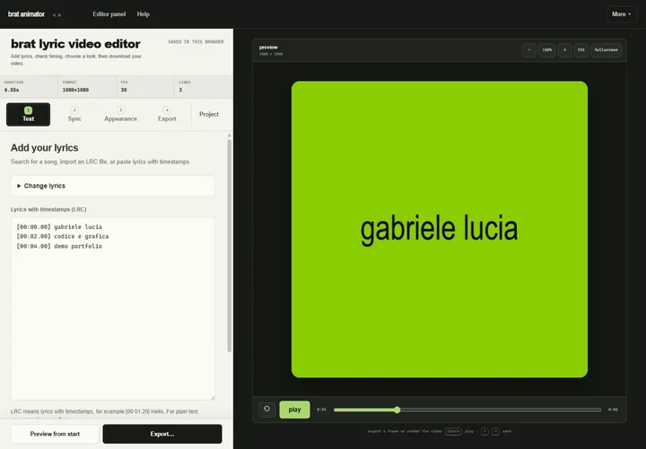
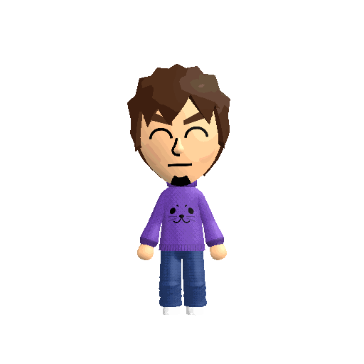
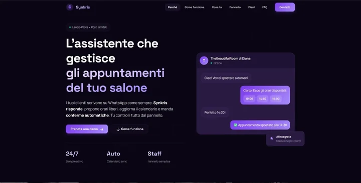
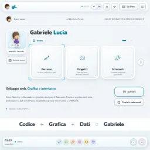
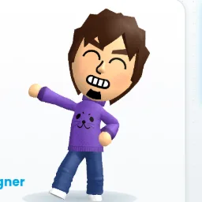
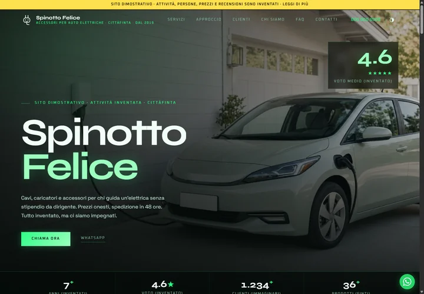
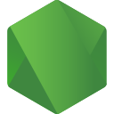
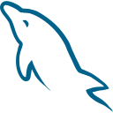

Editor creativo · browser
Brat Animator
Un editor per trasformare testi sincronizzati in lyric video, con timeline e rendering direttamente nel browser.
Sviluppo dell’applicazione · Canvas · export video
Sviluppo web. Grafica e interfacce.
Creo applicazioni web, grafiche e interfacce. Studio Ingegneria Informatica a UNIMORE, con base a Sassuolo.

Ruota il telefono per una visuale più ampia.
Chi sono

io, seduto
Volevo capire come funzionavano i software e provare a creare qualcosa di mio.
Con il tempo mi sono interessato sempre di più alla risoluzione dei problemi: capire cosa non funziona, trovare una soluzione e vedere il risultato nel programma che sto costruendo.
Codice e grafica → due lati dello stesso lavoro.
Il mio percorso
Dalla scuola all’università: siti per attività locali, un Erasmus a Siviglia, l’automazione industriale.
Informatica e Telecomunicazioni · Sassuolo
Siti web, interfacce e SEO per attività locali
Starbotica · Supporto IT e attività didattiche
Software e automazione · PLC / SQL Server
Ingegneria Informatica
Progetti selezionati
Tre lavori che mostrano come progetto e sviluppo si incontrano: un editor creativo, un gestionale e un flusso conversazionale.

Editor creativo · browser
Un editor per trasformare testi sincronizzati in lyric video, con timeline e rendering direttamente nel browser.
Sviluppo dell’applicazione · Canvas · export video

Automazione conversazionale
Un flusso WhatsApp che interpreta le richieste e collega prenotazioni, Google Calendar e dashboard gestionale.
Intent picker · backend · dashboard · fine-tuning
Gestionale multisalone · progetto di diploma
Un CRM per più saloni: clienti, servizi, disponibilità e appuntamenti condividono lo stesso contesto.
Backend PHP · database MySQL · disponibilità
Repository pubblici aggiornati di recente, ordinati per ultimo push. I progetti selezionati sono sopra. 5 repo · github.com/oakvx ↗

Questo portfolio
Sito personale · oakvx.github.io
Il sito che stai guardando: tema da console, transizioni tra le pagine e nessuna libreria esterna.

Profilo GitHub
README del profilo · oakvx
La pagina del mio profilo, ispirata alla home di una console dei primi anni 2010. Solo Markdown e immagini disegnate da zero.
Brat Animator
Editor di lyric video
Anima testi sincronizzati (LRC, TTML, SRT…) in stile brat ed esporta il video direttamente dal browser, senza backend.

Spinotto Felice
Sito vetrina · demo
Un modello di sito vetrina compilato per un’attività inventata: accessori per auto elettriche, in tema chiaro e scuro.
Top Gun Fly School
Landing page · sito non ufficiale
Una pagina per una scuola di volo ultraleggero di Reggio Emilia, scritta in un unico file HTML. Progetto dimostrativo.
Strumenti del mestiere
Una piccola scrivania: competenze, domande frequenti e un terminale che risponde davvero.
Tre aree di lavoro
01
Siti e applicazioni web: interfacce, pubblicazione e indicizzazione sui motori di ricerca.
in praticaSiti per officine, centri estetici e utensilerie, dal 2023 al 2026
Parliamone02
Logica lato server e database relazionali, dai CRUD all’automazione.
in praticaSynk, Beautify, Format SRL
Parliamone03
La parte visiva del lavoro, che affianco allo sviluppo software.
in praticaBrat Animator, pagine social
ParliamoneLingue: italiano (madrelingua) · inglese C1 · spagnolo B1 · greco B1 · cinese A2
// oakvx / portfolio
oakvx@portfolio:~ $ whoami
Gabriele Lucia
Junior developer & graphic designer. Sassuolo, Italia. Ingegneria Informatica @ UNIMORE.
Digita help per iniziare.
A Sassuolo, in provincia di Modena.
Ingegneria Informatica all’Università di Modena e Reggio Emilia (UNIMORE).
Italiano (madrelingua), inglese C1, spagnolo B1, greco B1, cinese A2.
Sì: a maggio e giugno 2025, con l’Erasmus+, alla Starbotica di Siviglia. Supporto IT e attività didattiche, in inglese e spagnolo.
HTML, CSS, JavaScript, Node.js, PHP, PostgreSQL, MySQL, T-SQL e Git.
Mi piace esplorare nuove tecnologie, sperimentare con progetti personali e imparare lingue straniere.
Scrivimi a gabrielelucia07@gmail.com.


Node.js
MySQL8 elementi
Contatti
Scrivimi due righe e continuiamo via email.